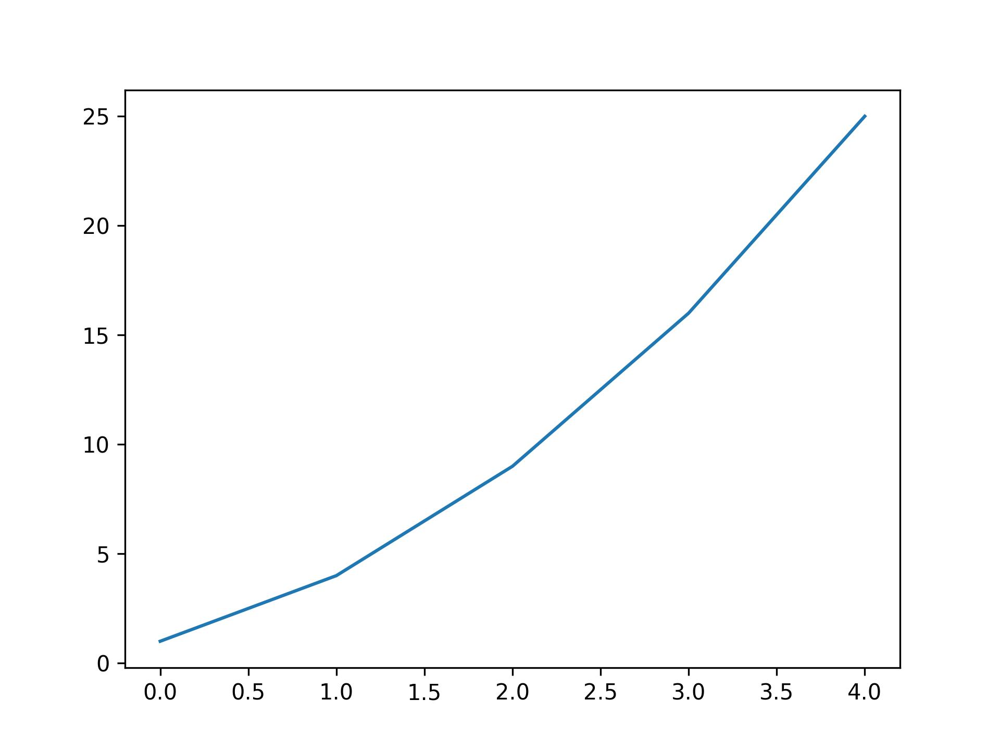
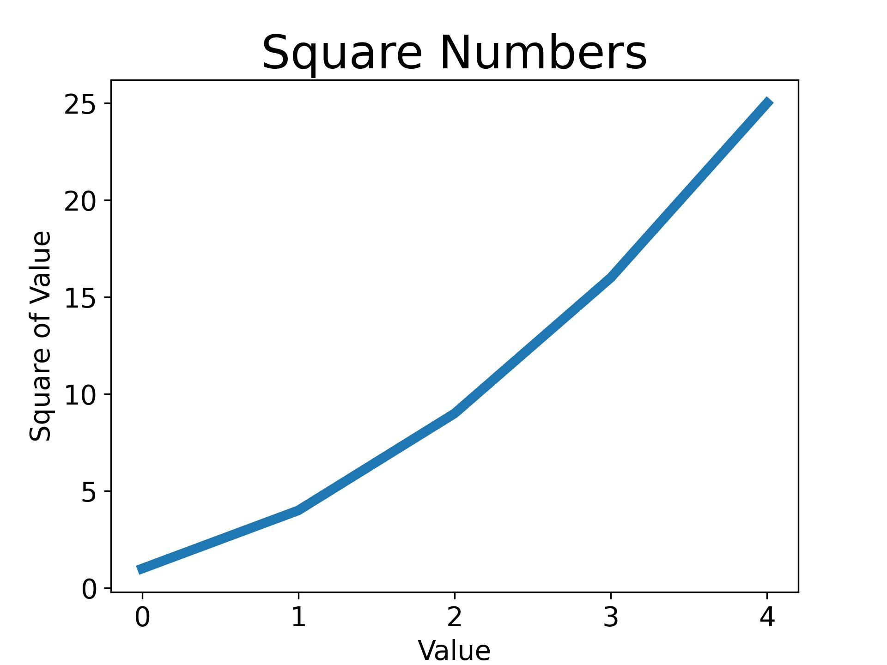
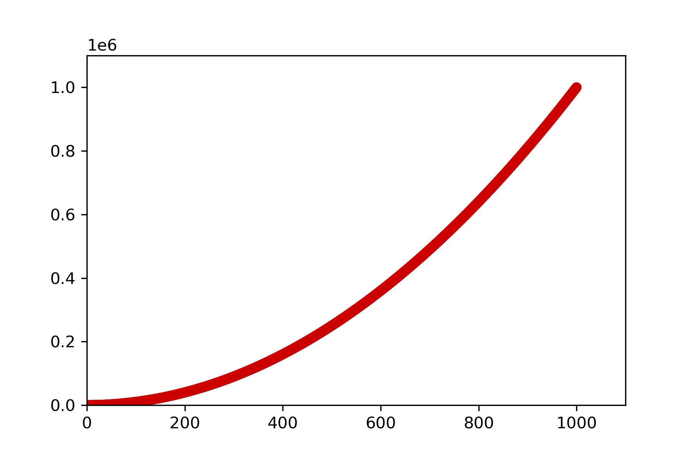
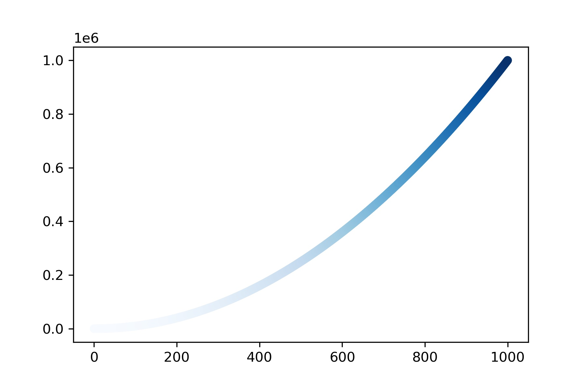
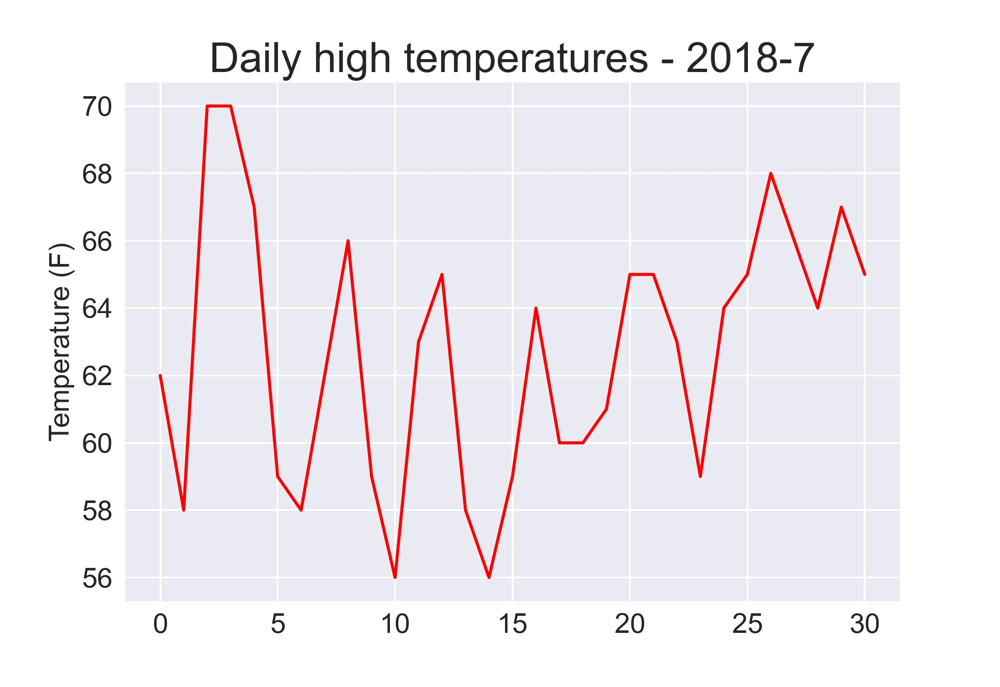
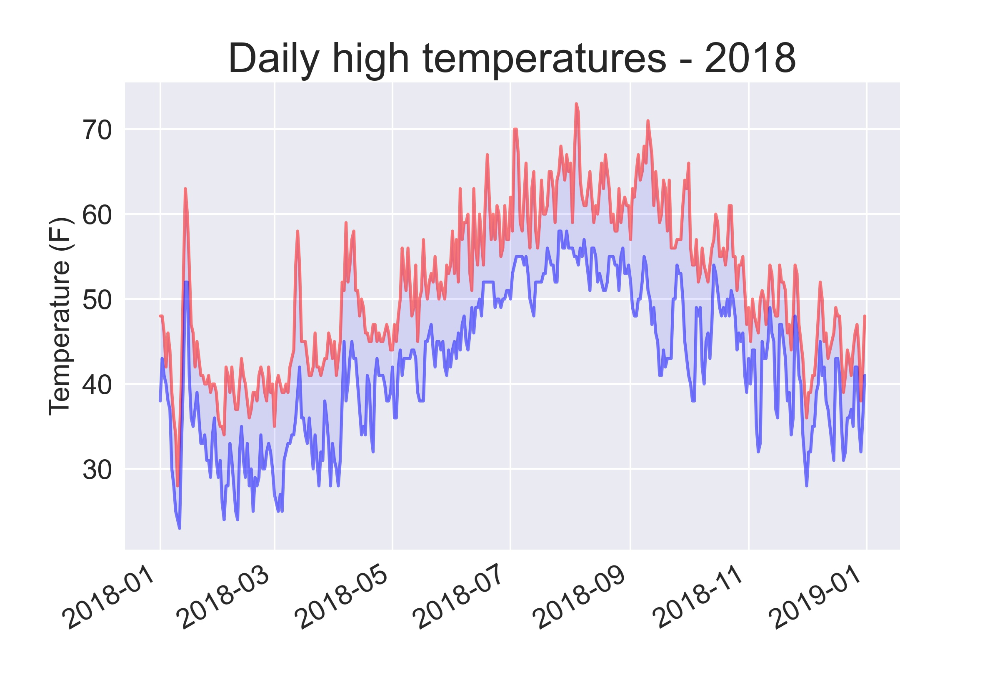
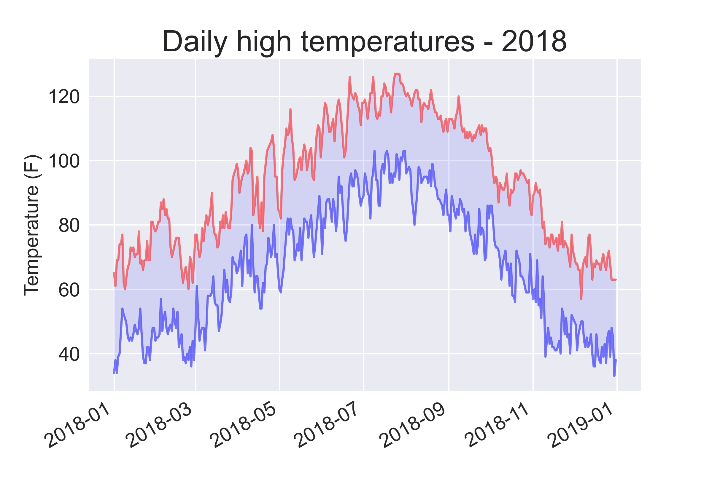
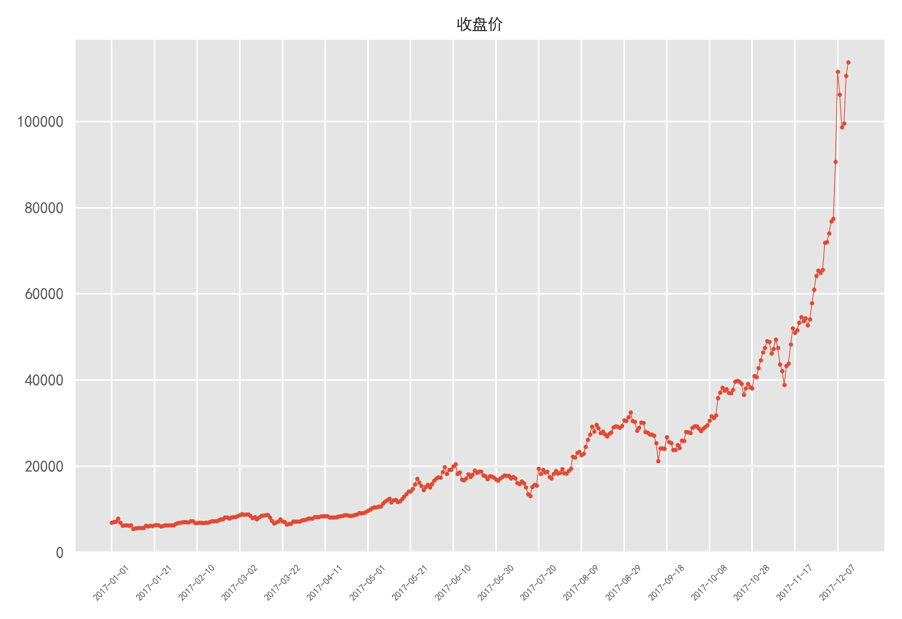
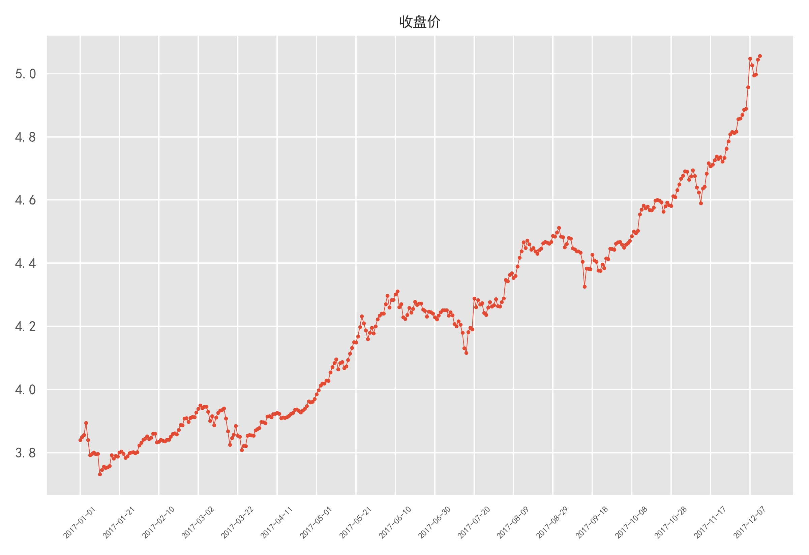
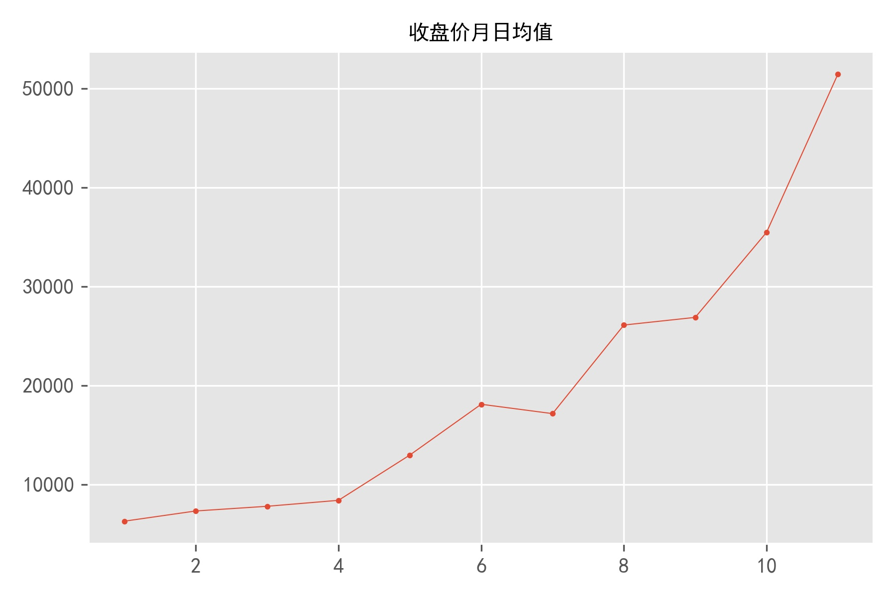

Python Programming
Lecture 12 Data Visualization
12.1 Data Visualization
-
Plotting a Simple Line Graph
import matplotlib.pyplot as plt
squares = [1, 4, 9, 16, 25]
plt.plot(squares)
# plt.show()
plt.savefig('simple.jpg',dpi=300)

Changing the Label Type and Graph Thickness
import matplotlib.pyplot as plt
squares = [1, 4, 9, 16, 25]
plt.plot(squares, linewidth=5)
# Set chart title and label axes.
plt.title("Square Numbers", fontsize=24)
plt.xlabel("Value", fontsize=14)
plt.ylabel("Square of Value", fontsize=14)
# Set size of tick labels.
plt.tick_params(axis='both', labelsize=14)
plt.show()

Correcting the Plot
import matplotlib.pyplot as plt
input_values = [1, 2, 3, 4, 5]
squares = [1, 4, 9, 16, 25]
plt.plot(input_values, squares, linewidth=5)
plt.show()

Plotting and Styling Individual Points with scatter()
import matplotlib.pyplot as plt
plt.scatter(2, 4)
plt.show()
import matplotlib.pyplot as plt
plt.scatter(2, 4, s=200)
# Set chart title and label axes.
plt.title("Square Numbers", fontsize=24)
plt.xlabel("Value", fontsize=14)
plt.ylabel("Square of Value", fontsize=14)
# Set size of tick labels.
plt.tick_params(axis='both', which='major', labelsize=14)
plt.show()
import matplotlib.pyplot as plt
x_values = [1, 2, 3, 4, 5]
y_values = [1, 4, 9, 16, 25]
plt.scatter(x_values, y_values, s=100)
plt.show()

import matplotlib.pyplot as plt
x_values = list(range(1, 1001))
y_values = [x**2 for x in x_values]
plt.scatter(x_values, y_values, s=40)
# Set the range for each axis.
plt.axis([0, 1100, 0, 1100000])
plt.show()

plt.scatter(x_values, y_values, edgecolor='none', s=40)
plt.scatter(x_values, y_values, color='red', edgecolor='none', s=40)
plt.scatter(x_values, y_values, color=(0, 0.8, 0), edgecolor='none', s=40) #RGB

import matplotlib.pyplot as plt
x_values = list(range(1001))
y_values = [x**2 for x in x_values]
plt.scatter(x_values, y_values, c=y_values, cmap=plt.cm.Blues,
edgecolor='none', s=40)
plt.show()

Random Walks
from random import choice
class RandomWalk():
def __init__(self, num_points=5000):
self.num_points = num_points
self.x_values = [0]
self.y_values = [0]
#continue
def fill_walk(self):
while len(self.x_values) < self.num_points:
x_direction = choice([1, -1])
x_distance = choice([0, 1, 2, 3, 4])
x_step = x_direction * x_distance
y_direction = choice([1, -1])
y_distance = choice([0, 1, 2, 3, 4])
y_step = y_direction * y_distance
if x_step == 0 and y_step == 0:
continue
next_x = self.x_values[-1] + x_step
next_y = self.y_values[-1] + y_step
self.x_values.append(next_x)
self.y_values.append(next_y)
import matplotlib.pyplot as plt
rw = RandomWalk()
rw.fill_walk()
plt.scatter(rw.x_values, rw.y_values, s=1)
plt.show()

Generating Multiple Random Walks
import matplotlib.pyplot as plt
while True:
rw = RandomWalk()
rw.fill_walk()
fig, ax = plt.subplots()
ax.scatter(rw.x_values, rw.y_values, s=15)
plt.show()
keep_running = input("Make another walk? (y/n): ")
if keep_running == 'n':
break
Styling the Walk
point_numbers = list(range(rw.num_points))
ax.scatter(rw.x_values, rw.y_values, c=point_numbers, cmap=plt.cm.Blues,
edgecolor='none', s=15)
ax.show()
rw = RandomWalk(50000)
ax.get_xaxis().set_visible(False)
ax.get_yaxis().set_visible(False)

Rolling Dice with Plotly
In Anaconda Prompt
pip install plotly
die.py
from random import randint
class Die():
def __init__(self, num_sides=6):
self.num_sides = num_sides
def roll(self):
return randint(1, self.num_sides)
die = Die()
results = []
for roll_num in range(100):
result = die.roll()
results.append(result)
print(results)
[3, 4, 1, 3, 4, 3, 4, 6, 4, 4, 1, 3, 6, 5, 2, 6, 2, 5, 4, 3, 5, 4, 2, 4, 3, 1, 2, 6, 6,
2, 3, 2, 1, 6, 6, 4, 3, 2, 3, 5, 2, 4, 3, 6, 3, 2, 1, 3, 2, 1, 4, 6, 6, 3, 3, 3, 2, 2,
6, 3, 1, 6, 3, 4, 2, 6, 4, 6, 6, 3, 5, 5, 5, 5, 5, 3, 3, 1, 3, 2, 4, 2, 3, 1, 1, 4, 4,
2, 4, 2, 5, 2, 6, 2, 5, 6, 2, 2, 6, 5]
-
Analyzing the Results
for roll_num in range(1000):
result = die.roll()
results.append(result)
frequencies = []
for value in range(1, die.num_sides+1):
frequency = results.count(value)
frequencies.append(frequency)
print(frequencies)
#[177, 187, 185, 187, 185, 179]
from plotly.graph_objs import Bar, Layout
from plotly import offline
# Visualize the results.
x_values=list(range(1,die.num_sides+1))
data=[Bar(x=x_values,y=frequencies)]
x_axis_config={'title': 'result'}
y_axis_config={'title': 'frequencies'}
my_layout=Layout(title='Rolling one D6 1000 times',
xaxis=x_axis_config, yaxis=y_axis_config)
offline.plot({'data':data,'layout':my_layout},filename='d6.html')
from plotly.graph_objs import Bar, Layout
from plotly import offline
from die import Die
# Create two D6 dice.
die_1 = Die()
die_2 = Die()
# Make some rolls, and store results in a list.
results = []
for roll_num in range(1000):
result = die_1.roll() + die_2.roll()
results.append(result)
# Analyze the results.
frequencies = []
max_result = die_1.num_sides + die_2.num_sides
for value in range(2, max_result+1):
frequency = results.count(value)
frequencies.append(frequency)
# Visualize the results.
x_values=list(range(2,max_result+1))
data=[Bar(x=x_values,y=frequencies)]
x_axis_config={'title': 'result', 'dtick':1}
y_axis_config={'title': 'frequencies'}
my_layout=Layout(title='Rolling two D6 dice 1000 times',
xaxis=x_axis_config, yaxis=y_axis_config)
offline.plot({'data':data,'layout':my_layout},filename='d6_d6.html')
12.2 Downloading Data (1)
.CSV
import csv
filename = 'sitka_weather_07-2018_simple.csv'
with open(filename) as f:
reader = csv.reader(f) #iterator
header_row = next(reader)
print(header_row)
for index, column_header in enumerate(header_row): #enumerate
print(index, column_header)
0 STATION
1 NAME
2 DATE
3 PRCP
4 TAVG
5 TMAX
6 TMIN
Extracting and Reading Data
import csv
filename = 'sitka_weather_07-2018_simple.csv'
with open(filename) as f:
reader = csv.reader(f)
header_row = next(reader)
print(header_row)
for index, column_header in enumerate(header_row):
print(index, column_header)
highs = []
for row in reader:
high = int(row[5])
highs.append(high)
print(highs)
[62, 58, 70, 70, 67, 59, 58, 62, 66, 59, 56, 63, 65, 58, 56, 59, 64, 60,
60, 61, 65, 65, 63, 59, 64, 65, 68, 66, 64, 67, 65]
from matplotlib import pyplot as plt
# Plot the high temperatures.
plt.style.use('seaborn')
fig, ax = plt.subplots()
ax.plot(highs, c='red')
# Format plot.
ax.set_title("Daily high temperatures - 2018-7", fontsize=24)
ax.set_xlabel('', fontsize=16)
ax.set_ylabel("Temperature (F)", fontsize=16)
ax.tick_params(axis='both', which='major', labelsize=16)
plt.show()
# fig.savefig('simple.jpg',dpi=300)

The datetime Module
from datetime import datetime
first_date = datetime.strptime('2018-7-1', '%Y-%m-%d')
print(type(first_date))
print(first_date.strftime('%B %d %Y'))
print(first_date)
<class 'datetime.datetime'>
July 01 2018
2018-07-01 00:00:00
%A Weekday name, such as Monday
%B Month name, such as January
%m Month, as a number (01 to 12)
%d Day of the month, as a number (01 to 31)
%Y Four-digit year, such as 2015
%y Two-digit year, such as 15
%H Hour, in 24-hour format (00 to 23)
%I Hour, in 12-hour format (01 to 12)
%p am or pm
%M Minutes (00 to 59) %S Seconds (00 to 61)
import csv
from datetime import datetime
from matplotlib import pyplot as plt
filename = 'sitka_weather_07-2018_simple.csv'
with open(filename) as f:
reader = csv.reader(f)
header_row = next(reader)
dates, highs= [], []
for row in reader:
current_date = datetime.strptime(row[2], "%Y-%m-%d")
dates.append(current_date)
high = int(row[5])
highs.append(high)
plt.style.use('seaborn')
fig, ax = plt.subplots()
ax.plot(dates, highs, c='red')
# Format plot.
ax.set_title("Daily high temperatures - 2018-7", fontsize=24)
ax.set_xlabel('', fontsize=16)
fig.autofmt_xdate()
ax.set_ylabel("Temperature (F)", fontsize=16)
ax.tick_params(axis='both', which='major', labelsize=16)
plt.show()

import csv
from datetime import datetime
from matplotlib import pyplot as plt
filename = 'sitka_weather_2018_simple.csv'
with open(filename) as f:
reader = csv.reader(f)
header_row = next(reader)
dates, highs, lows= [], [], []
for row in reader:
current_date = datetime.strptime(row[2], "%Y-%m-%d")
dates.append(current_date)
high = int(row[5])
highs.append(high)
low = int(row[6])
lows.append(low)
# Plot data.
plt.style.use('seaborn')
fig, ax = plt.subplots()
ax.plot(dates, highs, c='red', alpha=0.5)
ax.plot(dates, lows, c='blue', alpha=0.5)
ax.fill_between(dates, highs, lows, facecolor='blue', alpha=0.1)
# Format plot.
ax.set_title("Daily high temperatures - 2018", fontsize=24)
ax.set_xlabel('', fontsize=16)
fig.autofmt_xdate()
ax.set_ylabel("Temperature (F)", fontsize=16)
ax.tick_params(axis='both', which='major', labelsize=16)
plt.show()

import csv
from datetime import datetime
from matplotlib import pyplot as plt
filename = 'data/death_valley_2018_simple.csv'
with open(filename) as f:
reader = csv.reader(f)
header_row = next(reader)
dates, highs, lows = [], [], []
# continue
for row in reader:
try:
current_date = datetime.strptime(row[2], "%Y-%m-%d")
high = int(row[4])
low = int(row[5])
except ValueError:
print(current_date, 'missing data')
else:
dates.append(current_date)
highs.append(high)
lows.append(low)
# Plot data.
#--snip--

12.3 Downloading Data (2)
.JSON
import json
filename = 'btc_close_2017.json'
with open(filename) as f:
btc_data = json.load(f)
for btc_dict in btc_data:
date = btc_dict['date']
month = int(btc_dict['month'])
week = int(btc_dict['week'])
weekday = btc_dict['weekday']
close = int(float(btc_dict['close']))
print("{} is month {} week {}, {}, the close price is {} RMB".format(
date, month, week, weekday, close))
2017-01-01 is month 1 week 52, Sunday, the close price is 6928 RMB
2017-01-02 is month 1 week 1, Monday, the close price is 7070 RMB
2017-01-03 is month 1 week 1, Tuesday, the close price is 7175 RMB
2017-01-04 is month 1 week 1, Wednesday, the close price is 7835 RMB
2017-01-05 is month 1 week 1, Thursday, the close price is 6928 RMB
...
import json
filename = 'btc_close_2017.json'
with open(filename) as f:
btc_data = json.load(f)
date=[]; close=[]; months=[]
for btc_dict in btc_data:
date.append(btc_dict['date'])
months.append(int(btc_dict['month']))
close.append(int(float(btc_dict['close'])))
import matplotlib.pyplot as plt
plt.rcParams['font.sans-serif'] = ['SimHei']
plt.style.use('ggplot')
plt.plot(close, linewidth=0.5)
plt.scatter(date,close, s=5)
plt.xticks(date[::20],rotation=45,fontsize=6)
plt.title('收盘价',fontsize=10)
plt.tight_layout()
plt.savefig('收盘价折线图.jpg',dpi=300)

import matplotlib.pyplot as plt
import math
plt.rcParams['font.sans-serif'] = ['SimHei']
plt.style.use('ggplot')
close_log = [math.log10(xx) for xx in close]
plt.plot(close_log, linewidth=0.5)
plt.scatter(date,close_log, s=5)
plt.xticks(date[::20],rotation=45,fontsize=6)
plt.title('收盘价',fontsize=10)
plt.tight_layout()
plt.savefig('收盘价对数变换折线图.jpg',dpi=300)

groupby()
from itertools import groupby
for key, value_iter in groupby('aaabbbaaccd'):
print(key, ':', list(value_iter))
a : ['a', 'a', 'a']
b : ['b', 'b', 'b']
a : ['a', 'a']
c : ['c', 'c']
d : ['d']
from itertools import groupby
data = ['a', 'bb', 'ccc', 'dd', 'eee', 'f']
for key, value_iter in groupby(data, len):
print(key, ':', list(value_iter))
1 : ['a']
2 : ['bb']
3 : ['ccc']
2 : ['dd']
3 : ['eee']
1 : ['f']
from itertools import groupby
data = ['a', 'bb', 'cc', 'ddd', 'eee', 'f']
for key, value_iter in groupby(data, len):
print(key, ':', list(value_iter))
1 : ['a']
2 : ['bb', 'cc']
3 : ['ddd', 'eee']
1 : ['f']
zip()
>>> a = [1,2,3]
>>> b = [4,5,6]
>>> c = [4,5,6,7,8]
>>> zipped = zip(a,b)
>>> zipped
#iterator
>>> list(zipped)
[(1, 4), (2, 5), (3, 6)]
>>> list(zip(a,c))
[(1, 4), (2, 5), (3, 6)]
>>> a = [1,2,3]
>>> b = [4,5,6]
>>> c = [4,5,6,7,8]
>>> zipped = zip(a,b)
>>> list(zip(*zipped))
[(1, 2, 3), (4, 5, 6)]
>>> zipped = zip(a,b)
>>> x,y = zip(*zipped)
>>> print(x)
(1,2,3)
from itertools import groupby
import matplotlib.pyplot as plt
def draw_line(x_data, y_data, title):
xy_map = []
for x, y in groupby(sorted(zip(x_data, y_data)), lambda w: w[0]):
y_list = []
for first, second in y:
y_list.append(second)
xy_map.append([x, sum(y_list) / len(y_list)])
x_unique, y_mean = zip(*xy_map)
# continue
plt.rcParams['font.sans-serif'] = ['SimHei']
plt.style.use('ggplot')
plt.plot(x_unique, y_mean, linewidth=0.5)
plt.scatter(x_unique, y_mean, s=5)
plt.title(title,fontsize=10)
plt.tight_layout()
plt.savefig(title+'.jpg',dpi=300)
idx_month = date.index('2017-12-01')
line_chart_month = draw_line(months[:idx_month], close[:idx_month], '收盘价月日均值')

Summary
- Data Visualization
- Reading: Python Crash Course, Chapter 15, 16